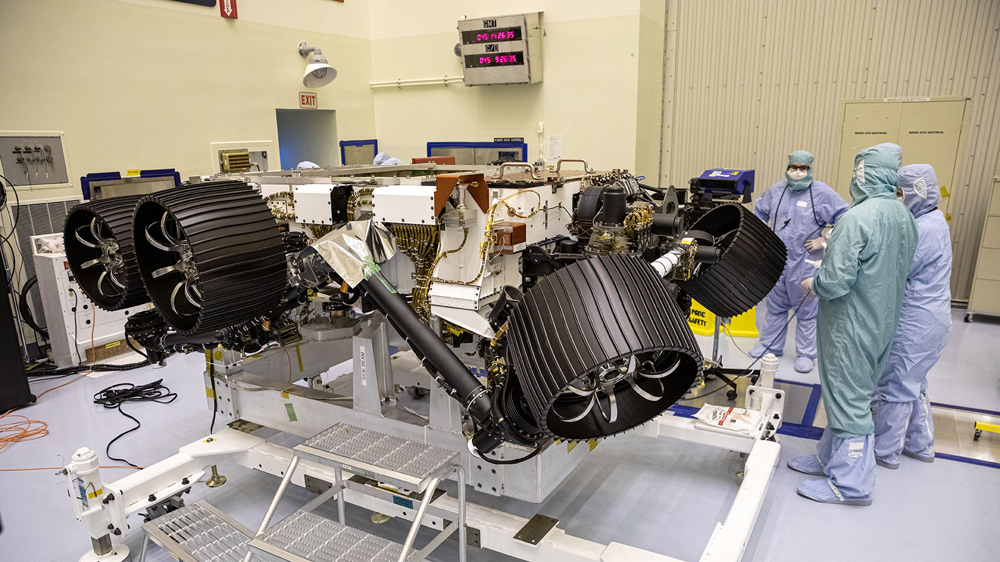
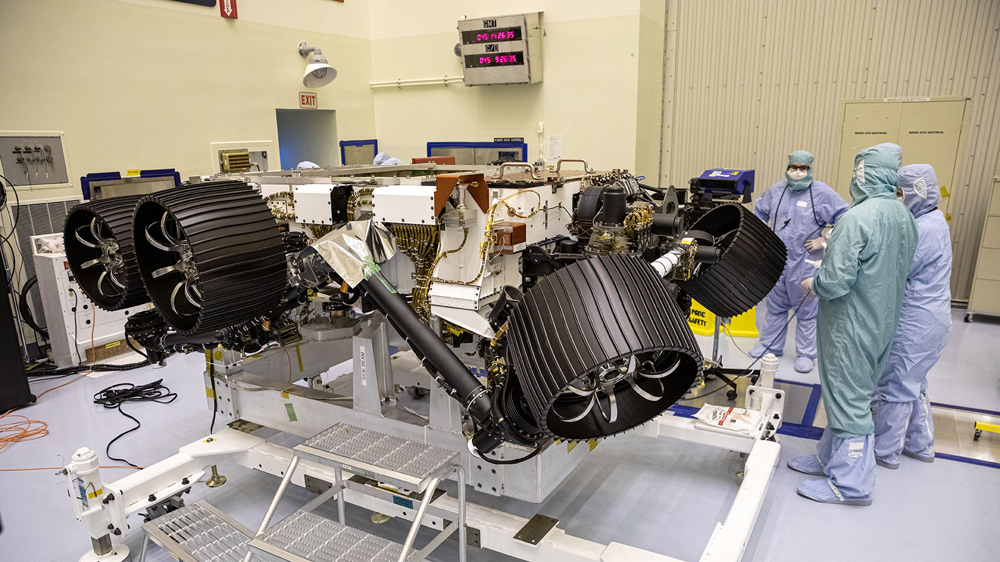

Persevarance:The Mars Rover
Persevarance is a mars Rover launching atop a Atlas V rocket from Cape Canerval Air Force Station in Florida.The Rocket Is Launching From SLC-51. It is launched to search for Microbes in Mars.This is a amazing mission beacause it carries a Mars Helicopter. This mission uses the same landing technique as Curiosity which landed on 2012 This is The Video On How it Landed(PS:IT Includes A bit of the launch and things that happened after the landing):
The Mars Helicopter Which it Carries Is Called Ingenuity Here Is A video About It: Okay People The Launch Will Be Happening On(Drum Roll)July 30 to August 15 it is not finalised but it will happen within these dates. and The Landing is happening On 18th Feburary 2021.UPDATE:Perseverance Blasted off from Cape Canerval On July 30 And It is On It's Way Mars Okay Guys I Hope You Learned Something New and As Soon as NASA Releases the link for the launch I will Put it here: Here are a couple of other videos you might like to watch:This is a video about the differences from Persevarance and Curiosity
This is NASA Explaining About the rover It Is a Bit Long
This is A seeker video about it if you are in a hurry Watch This
This Is another short video for people in a hurry
These Are Images Of Perseverance:
 

And Click Here For The youtube Playlist NASA Created About Persevarance